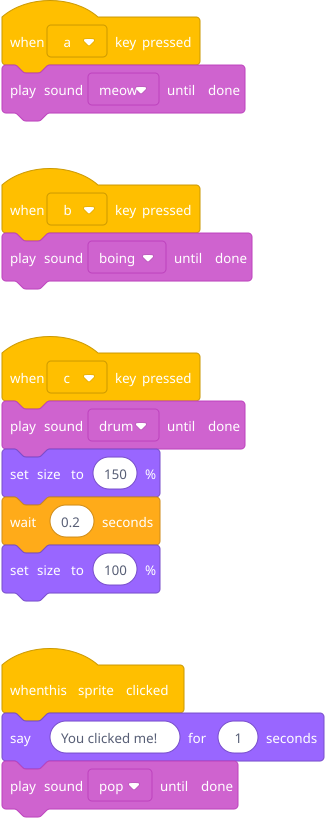
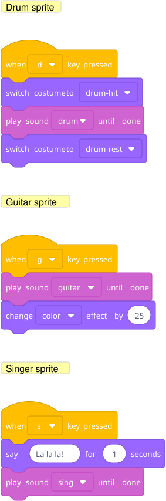

Start with: "What are all the different ways you can make something happen?" Let him discover when key pressed, when this sprite clicked, when backdrop switches, etc.
Goal: different keys trigger different sounds/animations. Each key is a separate event.

Blocks to point out: Each when ... key pressed is a separate script — they're all sitting on the same sprite but they're independent. The size change on the c key gives a visual "bounce" when the sound plays. play sound until done is under Sound — there's also start sound which doesn't wait for it to finish.
Key insight to draw out: A program isn't one long list of instructions. It's a bunch of small scripts, each waiting for its trigger. This is a genuinely important idea and Scratch makes it tangible.
Make a "band" with multiple sprites, each controlled by different keys, and perform a song.
Hint — blocks he'll need:

Each sprite is its own instrument. He assigns keys, picks sounds (the Scratch sound library has tons), and adds animations. Performing a "song" means pressing the right keys in the right rhythm — which is fun and also secretly reinforces that he is the sequencer now.